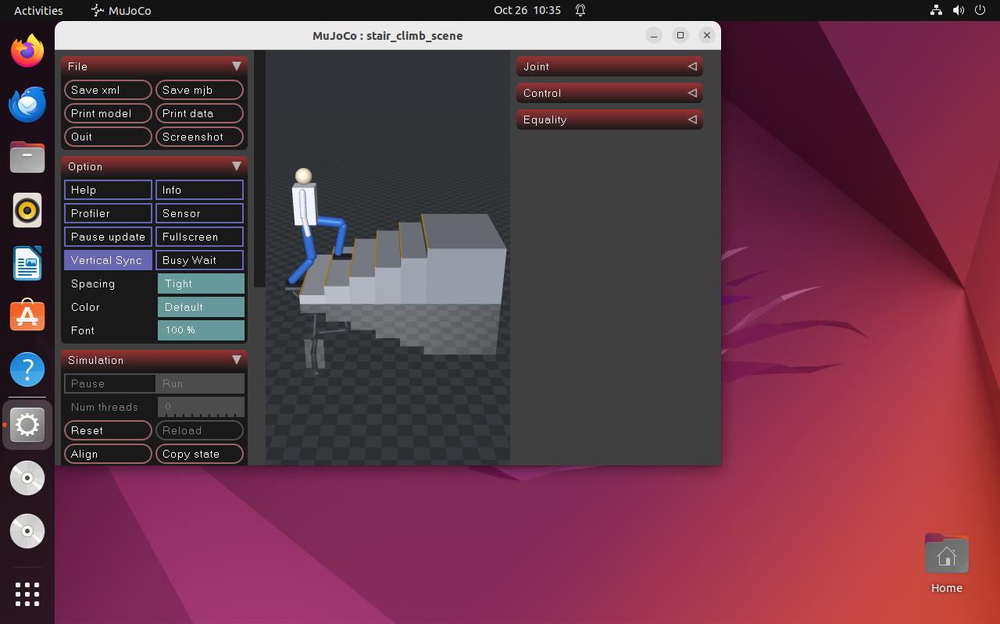
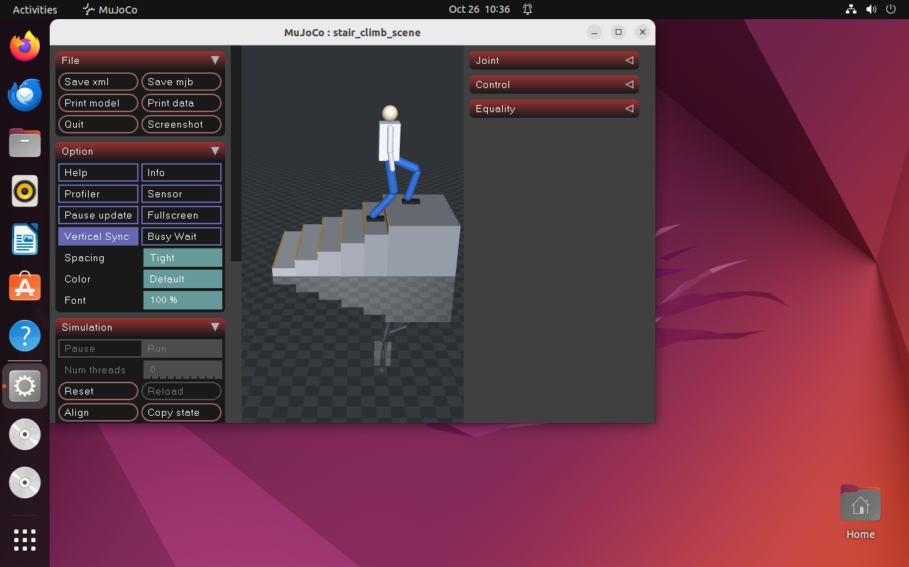
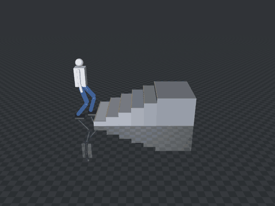

人形上下台阶步态仿真（humanoid_stair_climb）
MuJoCo 场景：平地 + 6 级台阶（每级高 0.12 m、深 0.30 m）+ 平台，总爬升 0.72 m。 人形用解析逆解 + 分段足端轨迹交替迈步，逐级走上去，全程脚底不穿台阶、关节不越限。
效果图
| 起步：双脚站在台阶前 | 中段：第 4～5 级，摆动腿抬起跨级 |
|---|---|
 |
 |
完整过程（Ubuntu 虚拟机内 ffmpeg -f x11grab 直接录屏，6 fps，596 KB）：

静图为 Ubuntu 22.04 虚拟机桌面的直接截屏，画面里能看到左侧 dock、顶部状态栏与 MuJoCo 窗口标题栏。
动图是虚拟机内对 MuJoCo 窗口的直接录屏（--pace --pace-scale 1.5 放慢后 ffmpeg -f x11grab 录 18 s，
再转 6 fps GIF）—— GNOME 跑在 Wayland 上，X11 抓屏只能拿到 XWayland 窗口，拿不到 GNOME 合成的桌面层。
一、为什么做这个模块
src/humanoid/ 下已有模块都在平地上：
| 模块 | 内容 | 差异 |
|---|---|---|
humanoid_ppo_locomotion |
PPO 神经网络平衡控制 | 学习型，平地站立/行走 |
humanoid_push_recovery |
外力推挤后的恢复 | 平地抗扰 |
humanoid_local_planner_bench |
DWA / APF 局部避障 | 平地 + 走廊窄门 |
mujoco_hopper_demo |
单足弹跳 | 单腿，无台阶 |
台阶是平地模块覆盖不到的一类：足端必须抬到比落点更高的高度才能跨过立面， 重心要跟着支撑脚升降，腿长余量随时可能不够。这三件事在平地上都碰不到。
二、场景与机器人模型
models/stair_scene.xml：
台阶 6 级实心方块，第 k 级顶面 z = 0.12k，x ∈ [0.30(k-1), 0.30k]
平台 x ∈ [1.80, 2.40]，顶面 z = 0.72
机器人 freejoint（运动学驱动）
├── 躯干/头/双臂 contype=0，纯视觉
└── 每条腿 3 关节 hip / knee / ankle，轴均为 +y
腿部尺寸：髋在基座上方 0.76 m，大腿 0.45 m，小腿 0.45 m，脚底在踝下 0.04 m。 腿全长 0.90 m，站立时髋到踝 0.78 m，留约 0.12 m 余量——上台阶时两脚会短暂 相差两级（0.24 m 高差），余量就是留给这一下的。
三、步态与逆解
humanoid_stair_climb/gait.py，不依赖 MuJoCo，可单独跑单元测试。
足端轨迹按周期分三段，不是「线性上升 + 正弦拱」：
u ∈ [0, 0.25) 原地抬到安全高度 max(z0,z1) + 0.05
u ∈ [0.25,0.75) 水平移动到落点，全程保持安全高度
u ∈ [0.75,1.0) 落到 z1
先抬后走的原因：脚是 0.24 m 长的盒子，前端比踝超前 0.18 m。用正弦拱时踝还在 立面之前、脚前端已经伸进台阶里，脚底高度又不够，实测穿模 26 mm。改成分段后
max_penetration = 0.000 m。
解析 IK（两连杆闭式解）：由髋到踝的向量直接解 hip / knee，踝角取 -(hip+knee)
让脚底保持水平。关节方向按 MuJoCo 的 +y 轴约定吸收进公式，往返误差实测 0.0000。
重心高度取两只脚里最低的那个目标高度（支撑脚用当前台阶，摆动脚用它即将落到的台阶）：
最初取「较高的一只」并让摆动脚用当前高度，实测
髋→踝 = 0.905 m > 腿长 0.90 m， IK 被 clamp，脚被拖进立面。改成取最低、并且摆动脚提前用落点高度，最大伸展降到 0.838 m。
四、复现
cd src/humanoid/humanoid_stair_climb
python3 -m pip install -r requirements.txt
python3 main.py --test # 14 项检查
python3 main.py # 打开 MuJoCo 窗口实时演示
python3 main.py --headless # 只打印指标并写 CSV
录 GIF：
python3 main.py --headless --record frames --record-every 0.4
--record 走离屏渲染，导出纯场景画面、不含 UI。要录带 MuJoCo 窗口的动图，
用 --pace --pace-scale 1.5 打开窗口后直接 ffmpeg -f x11grab -window_id <id> 录屏。
ROS 2：
colcon build --packages-select humanoid_stair_climb --symlink-install
source install/setup.bash
ros2 launch humanoid_stair_climb main.launch.py
ros2 topic echo /stair_climb/status --once
节点发布的 /stair_climb/joint_states、/stair_climb/odom、/stair_climb/status 与
/tf（odom → base_link）走的是和 main.py --headless 同一套步态与指标，
所以 status 里那行摘要和终端输出逐字一致。到达平台后再按 hold 秒继续，
之后停在平台位姿上继续发位姿，下游查 TF 不会超时。
五、实测结果
Ubuntu 22.04 + Python 3.10.12 + MuJoCo 3.15.0，控制频率 50 Hz，步态周期 1.4 s。
| 指标 | 数值 |
|---|---|
| 到达平台 | 是 |
| 用时 | 11.84 s |
| 步数 | 17 |
| 爬升 | 0.720 m（= 6 × 0.12） |
| 最高基座 | 0.780 m |
| 终点 x | 2.19 m |
| 脚与台阶最小间距 | −0.000 m（无穿透） |
| 最大穿透 | 0.000 m |
| 落脚点误差 | 0.000 m |
| 关节越界 | 0 |
同一个 --headless 在 Windows 宿主机与 Ubuntu 虚拟机内结果逐位一致。
「关节越界 0」是把六个关节全部按 models/stair_scene.xml 里的 joint range 逐帧比对
得到的：hip ±1.6、knee [−0.02, 2.1]、ankle ±1.1。本场景实际用到的行程是
hip 最大 1.4622、knee 最大 1.9547、ankle 最大 0.9636，都留了余量。
这组限位是给这个自建模型定的，不是实测机器人的机械限位；test_standalone.py
里有一条测试解析 XML 比对 config.JOINT_LIMITS，改一处不改另一处会直接失败。
六、能力边界
- 不含平衡控制：基座是 freejoint 运动学驱动，重心高度由步态给定，不是动力学算出来的。 本模块评价的是「足端轨迹与逆解是否合理」，不是「人形会不会摔倒」。
- 脚不参与接触：脚
contype=0，与台阶的间距用mj_geomDistance量，不做接触力求解。 - 无感知与规划：台阶尺寸是给定的，不做视觉识别或落脚点搜索。
- 单一场景：6 级等高等深的直台阶，结论不外推到变高变深、带转角的楼梯。
- 速度较慢：设计前进速度 0.214 m/s（= 步幅 0.30 / 周期 1.4），等价于「一步一级」的保守走法。 实测起点 x = −0.35、终点 2.19，11.84 s 走 2.54 m，平均 0.215 m/s，与设计值一致。
七、参数
| 参数 | 位置 | 默认 | 说明 |
|---|---|---|---|
STEP_HEIGHT / STEP_DEPTH / STEP_COUNT |
config.py |
0.12 m / 0.30 m / 6 | 台阶几何 |
HIP_Z / THIGH / SHANK |
config.py |
0.76 / 0.45 / 0.45 m | 腿部尺寸 |
CYCLE_TIME / SWING_RATIO |
config.py |
1.4 s / 0.42 | 步态周期与单腿摆动占比 |
STRIDE / LIFT_HEIGHT |
config.py |
0.30 m / 0.05 m | 每步前进距离与抬腿余量 |
CONTROL_HZ |
config.py |
50 Hz | 控制频率 |
TIME_LIMIT / HOLD_TIME |
config.py |
16 s / 2 s | 仿真时长上限 / 到达后停留 |
JOINT_LIMITS |
config.py |
hip ±1.6、knee [−0.02,2.1]、ankle ±1.1 | 关节限位，与 XML 里 range 一致 |
cycle_time / swing_ratio / lift_height |
config/params.yaml |
同上 | ROS 节点用的参数 |
time_limit / hold |
config/params.yaml |
16 / 2 | ROS 节点的时长与停留，与 config.py 保持一致 |